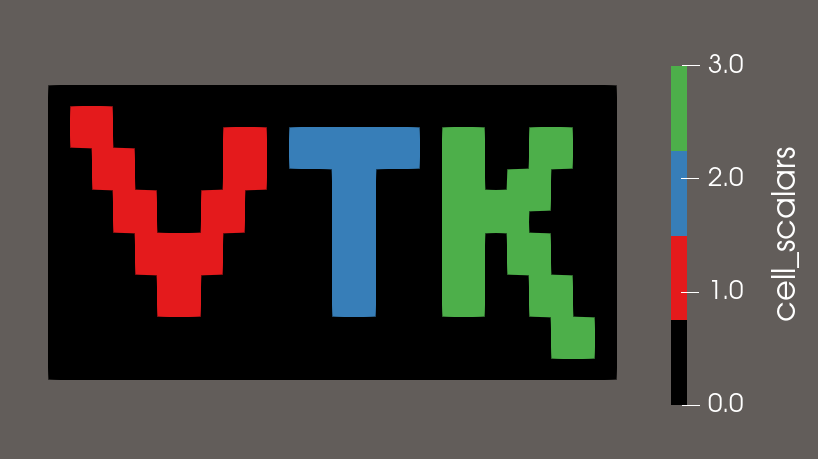
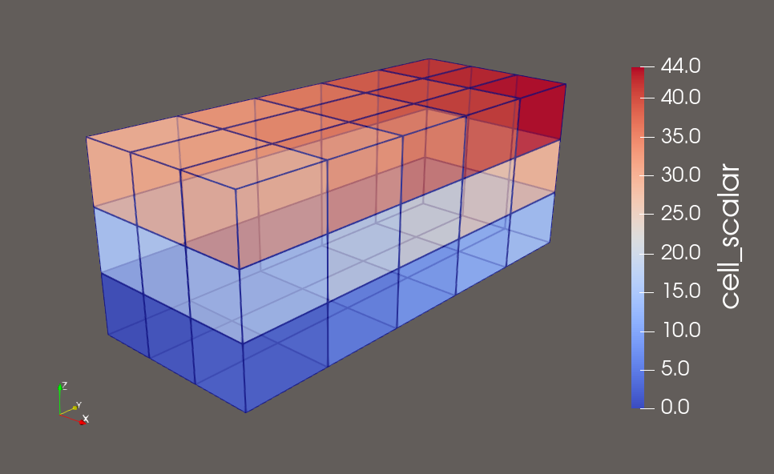
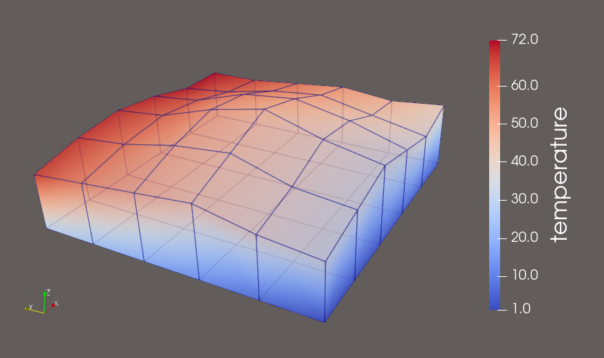
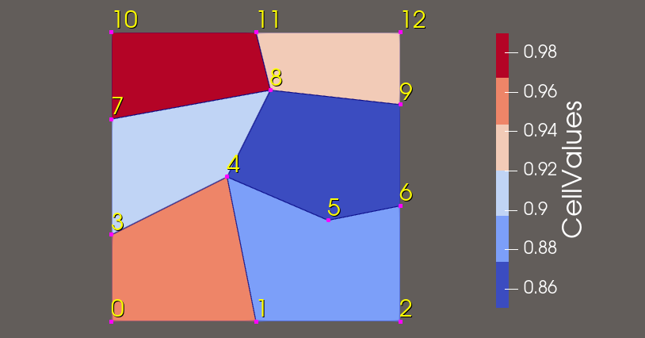
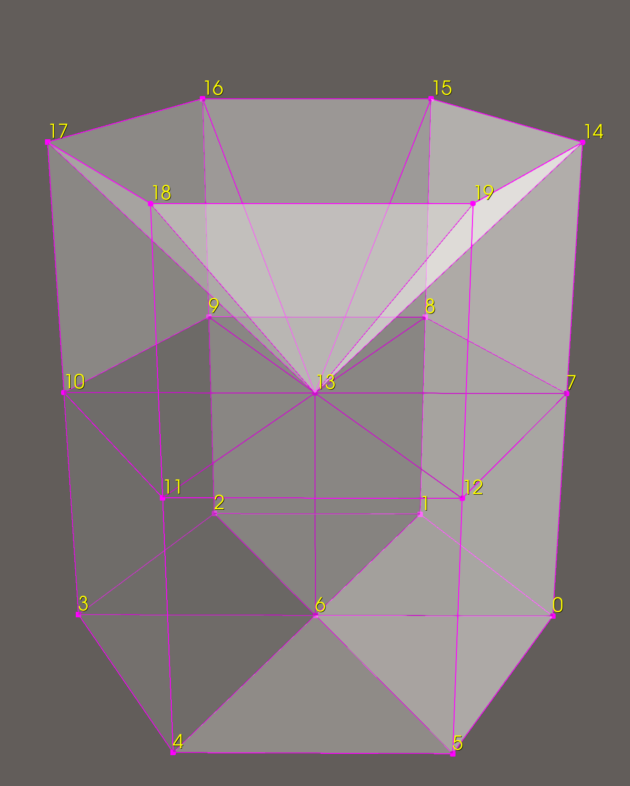
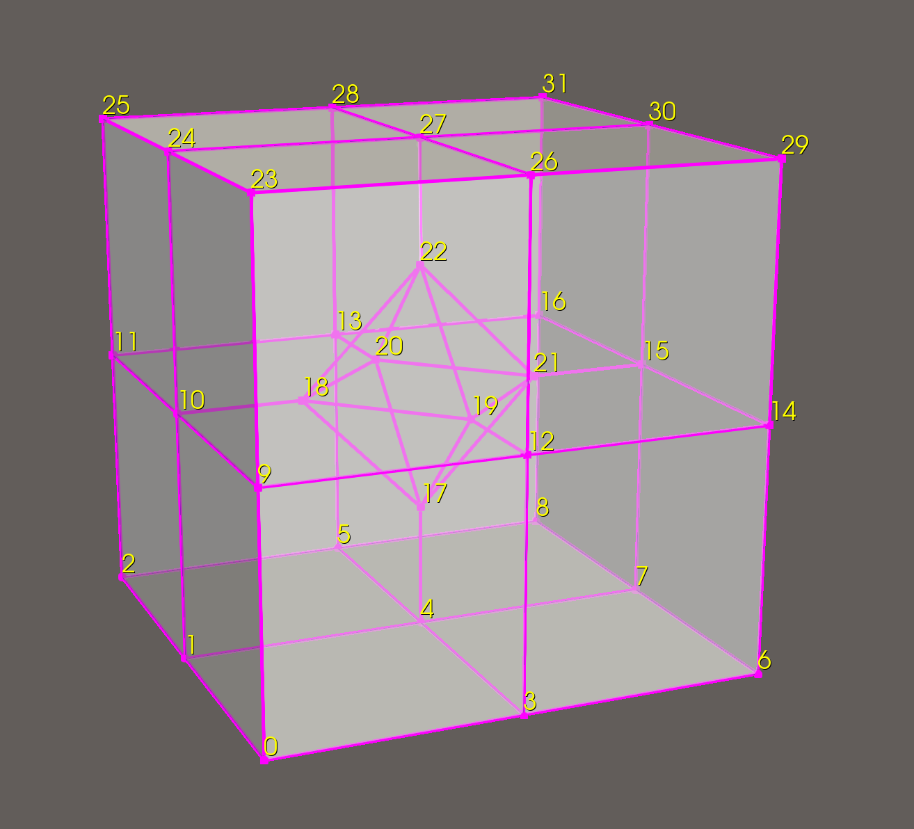
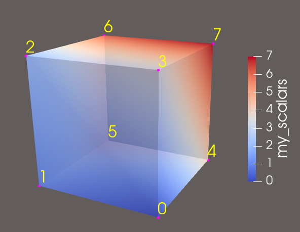

XML File Formats#
VTK provides an additional set of data formats using XML syntax. While these formats are much more complicated than the original VTK format described previously (see Simple Legacy Formats), they support many more features. The major motivation for their development was to facilitate data streaming and parallel I/O. Some features of the format include support for compression, portable binary encoding, random access, big endian and little endian byte order, multiple file representation of piece data, and new file extensions for different VTK dataset types. XML provides many features as well, especially the ability to extend a file format with application specific tags.
There are two types of VTK XML data files: serial and parallel, described below.
Serial. File types designed for reading and writing by single-process applications. All of the data is contained within a single file.
Parallel. File types designed for reading and writing by applications with multiple processes executing in parallel. The dataset is broken into pieces. Each process is assigned a piece or set of pieces to read or write. An individual piece is stored in a corresponding serial file type. The parallel file type does not actually contain any data, but instead describes structural information and then references other serial files containing the data for each piece.
In the XML format, VTK datasets are classified into one of two categories.
Structured. The dataset is a topologically regular array of cells such as pixels and voxels (e.g., image data) or quadrilaterals and hexahedra (e.g., structured grid). Rectangular subsets of the data are described through extents. The structured dataset types are vtkImageData, vtkRectilinearGrid, and vtkStructuredGrid.
Unstructured. The dataset forms a topologically irregular set of points and cells. Subsets of the data are described using pieces. The unstructured dataset types are vtkPolyData and vtkUnstructuredGrid.
By convention, each data type and file type is paired with a particular file extension. The types and corresponding extensions are:
ImageData (.vti): Serial vtkImageData (structured).
PolyData (.vtp): Serial vtkPolyData (unstructured).
RectilinearGrid (.vtr): Serial vtkRectilinearGrid (structured).
StructuredGrid (.vts): Serial vtkStructuredGrid (structured).
UnstructuredGrid (.vtu): Serial vtkUnstructuredGrid (unstructured).
PImageData (.pvti): Parallel vtkImageData (structured).
PPolyData (.pvtp): Parallel vtkPolyData (unstructured).
PRectilinearGrid (.pvtr): Parallel vtkRectilinearGrid (structured).
PStructuredGrid (.pvts): Parallel vtkStructuredGrid (structured).
PUnstructuredGrid (.pvtu): Parallel vtkUnstructuredGrid (unstructured).
All of the VTK XML file types are valid XML documents.
Note:
There is one case in which the file is not a valid XML document. When the AppendedData section is not encoded as base64, raw binary data is present that may violate the XML specification. This is not default behavior, and must be explicitly enabled by the user.
The document-level element is VTKFile:
<VTKFile type="ImageData" version="0.1" byte_order="LittleEndian">
...
</VTKFile>
The attributes of the element are:
type: The type of the file (see the bulleted list above).
version: File version number in “major.minor” format.
byte_order: Machine byte order in which data is stored. This is either “BigEndian” or “LittleEndian”.
compressor: Some data in the file may be compressed. This specifies the subclass of vtkDataCompressor that was used to compress the data.
Nested inside the VTKFile element is an element whose name corresponds to the value of the type attribute. This element describes the dataset topology and differs between the serial and parallel formats. The two formats are described below.
Serial XML File Formats#
The VTKFile element contains one element whose name corresponds to the type of dataset the file describes. We refer to this as the dataset element, which is one of ImageData, RectilinearGrid, StructuredGrid, PolyData, or UnstructuredGrid. The dataset element contains one or more Piece elements, each describing a portion of the dataset. Together, the dataset element and Piece elements specify the entire dataset.
Each piece of a dataset must specify the geometry (points and cells) of that piece along with the data associated with each point or cell. Geometry is specified differently for each dataset type, but every piece of every dataset contains PointData and CellData elements specifying the data for each point and cell in the piece.
The general structure for each serial dataset format is as follows:
ImageData#
Each ImageData piece specifies its extent within the dataset’s whole extent. The points and cells are described implicitly by the extent, origin, and spacing. Note that the origin and spacing are constant across all pieces, so they are specified as attributes of the ImageData XML element as follows.
<VTKFile type="ImageData" ...>
<ImageData WholeExtent="x1 x2 y1 y2 z1 z2"
Origin="x0 y0 z0" Spacing="dx dy dz">
<Piece Extent="x1 x2 y1 y2 z1 z2">
<PointData>...</PointData>
<CellData>...</CellData>
</Piece>
</ImageData>
</VTKFile>
RectilinearGrid#
Each RectilinearGrid piece specifies its extent within the dataset’s whole extent. The points are described by the Coordinates element. The cells are described implicitly by the extent.
<VTKFile type="RectilinearGrid" ...>
<RectilinearGrid WholeExtent="x1 x2 y1 y2 z1 z2">
<Piece Extent="x1 x2 y1 y2 z1 z2">
<PointData>...</PointData>
<CellData>...</CellData>
<Coordinates>...</Coordinates>
</Piece>
</RectilinearGrid>
</VTKFile>
StructuredGrid#
Each StructuredGrid piece specifies its extent within the dataset’s whole extent. The points are described explicitly by the Points element. The cells are described implicitly by the extent.
<VTKFile type="StructuredGrid" ...>
<StructuredGrid WholeExtent="x1 x2 y1 y2 z1 z2">
<Piece Extent="x1 x2 y1 y2 z1 z2">
<PointData>...</PointData>
<CellData>...</CellData>
<Points>...</Points>
</Piece>
</StructuredGrid>
</VTKFile>
PolyData#
Each PolyData piece specifies a set of points and cells independently from the other pieces. The points are described explicitly by the Points element. The cells are described explicitly by the Verts, Lines, Strips, and Polys elements.
<VTKFile type="PolyData" ...>
<PolyData>
<Piece NumberOfPoints="#" NumberOfVerts="#" NumberOfLines="#"
NumberOfStrips="#" NumberOfPolys="#">
<PointData>...</PointData>
<CellData>...</CellData>
<Points>...</Points>
<Verts>...</Verts>
<Lines>...</Lines>
<Strips>...</Strips>
<Polys>...</Polys>
</Piece>
</PolyData>
</VTKFile>
UnstructuredGrid#
Each UnstructuredGrid piece specifies a set of points and cells independently from the other pieces. The points are described explicitly by the Points element. The cells are described explicitly by the Cells element.
<VTKFile type="UnstructuredGrid" ...>
<UnstructuredGrid>
<Piece NumberOfPoints="#" NumberOfCells="#">
<PointData>...</PointData>
<CellData>...</CellData>
<Points>...</Points>
<Cells>...</Cells>
</Piece>
</UnstructuredGrid>
</VTKFile>
Every dataset describes the data associated with its points and cells with PointData and CellData XML elements as follows:
<PointData Scalars="Temperature" Vectors="Velocity">
<DataArray Name="Velocity" .../>
<DataArray Name="Temperature" .../>
<DataArray Name="Pressure" .../>
</PointData>
VTK allows an arbitrary number of data arrays to be associated with the points and cells of a dataset. Each data array is described by a DataArray element which, among other things, gives each array a name. The following attributes of PointData and CellData are used to specify the active arrays by name:
Scalars: The name of the active scalars array, if any.
Vectors: The name of the active vectors array, if any.
Normals: The name of the active normals array, if any.
Tensors: The name of the active tensors array, if any.
TCoords: The name of the active texture coordinates array, if any.
Some datasets describe their points and cells using different combinations of the following common elements:
Points. The Points element explicitly defines coordinates for each point individually. It contains one DataArray element describing an array with three components per value, each specifying the coordinates of one point.
<Points>
<DataArray NumberOfComponents="3" .../>
</Points>
Coordinates. The Coordinates element defines point coordinates for an extent by specifying the ordinate along each axis for each integer value in the extent’s range. It contains three DataArray elements describing the ordinates along the x-y-z axes, respectively.
<Coordinates>
<DataArray .../>
<DataArray .../>
<DataArray .../>
</Coordinates>
Verts, Lines, Strips, and Polys. The Verts, Lines, Strips, and Polys elements define cells explicitly by specifying point connectivity. Cell types are implicitly known by the type of element in which they are specified. Each element contains two DataArray elements. The first array specifies the point connectivity. All the cells’ point lists are concatenated together. The second array specifies the offset into the connectivity array for the end of each cell.
<Verts>
<DataArray type="Int32" Name="connectivity" .../>
<DataArray type="Int32" Name="offsets" .../>
</Verts>
Cells. The Cells element defines cells explicitly by specifying point connectivity and cell types. It contains three DataArray elements. The first array specifies the point connectivity. All the cells’ point lists are concatenated together. The second array specifies the offset into the connectivity array for the end of each cell. The third array specifies the type of each cell. (Note: the cell types are defined in Figure 2 and Figure 3.)
<Cells>
<DataArray type="Int32" Name="connectivity" .../>
<DataArray type="Int32" Name="offsets" .../>
<DataArray type="UInt8" Name="types" .../>
</Cells>
All of the data and geometry specifications use DataArray elements to describe their actual content as follows:
DataArray. The DataArray element stores a sequence of values of one type. There may be one or more components per value.
<DataArray type="Float32" Name="vectors" NumberOfComponents="3"
format="appended" offset="0"/>
<DataArray type="Float32" Name="scalars" format="binary">
bAAAAAAAAAAAAIA/AAAAQAAAQEAAAIBA... </DataArray>
<DataArray type="Int32" Name="offsets" format="ascii">
10 20 30 ... </DataArray>
The attributes of the DataArray elements are described as follows:
type: The data type of a single component of the array. This is one of Int8, UInt8, Int16, UInt16, Int32, UInt32, Int64, UInt64, Float32, Float64. Note: 64-bit integer types are supported only if VTK_USE_64BIT_IDS is enabled (a CMake variable—see “CMake” on page 10) or if the platform is 64-bit.
Name: The name of the array. This is usually a brief description of the data stored in the array.
NumberOfComponents: The number of components per value in the array.
format: The means by which the data values themselves are stored in the file. This is “ascii”, “binary”, or “appended”.
offset: If the format attribute is “appended”, this specifies the offset from the beginning of the appended data section to the beginning of this array’s data.
The format attribute chooses among the three ways in which data values can be stored:
format=”ascii” — The data is listed in ASCII directly inside the DataArray element. Whitespace is used for separation.
format=”binary” — The data is encoded in base64 and listed contiguously inside the DataArray element. Data may also be compressed before encoding in base64. The byte order of the data matches that specified by the byte_order attribute of the VTKFile element.
format=”appended” — The data is stored in the appended data section. Since many DataArray elements may store their data in this section, the offset attribute is used to specify where each DataArray’s data begins. This format is the default used by VTK’s writers.
The appended data section is stored in an AppendedData element that is nested inside VTKFile after the dataset element:
<VTKFile ...>
...
<AppendedData encoding="base64">
_QMwEAAAAAAAAA...
</AppendedData>
</VTKFile>
The appended data section begins immediately after the underscore (‘_’) that prefixes the content of the AppendedData element; the underscore itself is not part of the data but is always present. Data in this section is stored in binary form and may be compressed and/or base64 encoded. The byte order of the data matches the value of the byte_order attribute of the VTKFile element. Each DataArray’s data is stored contiguously and appended immediately after the previous DataArray’s data without a separator. The DataArray’s offset attribute indicates the file-position offset from the first character after the underscore to the beginning of its data.
Parallel File Formats#
The parallel file formats do not actually store any data in the file. Instead, the data is broken into pieces, each of which is stored in a serial file of the same dataset type.
The VTKFile element contains one element whose name corresponds to the type of dataset the file describes, but with a “P” prefix. We refer to this as the parallel dataset element, which is one of PImageData, PRectilinearGrid, PStructuredGrid, PPolyData, or PUnstructuredGrid.
The parallel dataset element and those nested inside specify the data array types used to store points, point data, and cell data (the type of arrays used to store cells is fixed by VTK). The element does not actually contain any data, but instead includes a list of Piece elements that specify the source from which to read each piece. Individual pieces are stored in the corresponding serial file format. The parallel file specifies the types and structural information so that readers can update pipeline information without reading the pieces’ files.
The general structure for each parallel dataset format is as follows:
PImageData#
The PImageData element specifies the whole extent of the dataset and the number of ghost-levels by which the extents in the individual pieces overlap. The Origin and Spacing attributes implicitly specify the point locations. Each Piece element describes the extent of one piece and the file in which it is stored.
<VTKFile type="PImageData" ...>
<PImageData WholeExtent="x1 x2 y1 y2 z1 z2"
GhostLevel="#" Origin="x0 y0 z0" Spacing="dx dy dz">
<PPointData>...</PPointData>
<PCellData>...</PCellData>
<Piece Extent="x1 x2 y1 y2 z1 z2" Source="imageData0.vti"/>
...
</PImageData>
</VTKFile>
PRectilinearGrid#
The PRectilinearGrid element specifies the whole extent of the dataset and the number of ghost-levels by which the extents in the individual pieces overlap. The PCoordinates element describes the type of arrays used to specify the point ordinates along each axis, but does not actually contain the data. Each Piece element describes the extent of one piece and the file in which it is stored.
<VTKFile type="PRectilinearGrid" ...>
<PRectilinearGrid WholeExtent="x1 x2 y1 y2 z1 z2"
GhostLevel="#">
<PPointData>...</PPointData>
<PCellData>...</PCellData>
<PCoordinates>...</PCoordinates>
<Piece Extent="x1 x2 y1 y2 z1 z2"
Source="rectilinearGrid0.vtr"/>
...
</PRectilinearGrid>
</VTKFile>
PStructuredGrid#
The PStructuredGrid element specifies the whole extent of the dataset and the number of ghost-levels by which the extents in the individual pieces overlap. The PPoints element describes the type of array used to specify the point locations, but does not actually contain the data. Each Piece element describes the extent of one piece and the file in which it is stored.
<VTKFile type="PStructuredGrid" ...>
<PStructuredGrid WholeExtent="x1 x2 y1 y2 z1 z2"
GhostLevel="#">
<PPointData>...</PPointData>
<PCellData>...</PCellData>
<PPoints>...</PPoints>
<Piece Extent="x1 x2 y1 y2 z1 z2"
Source="structuredGrid0.vts"/>
...
</PStructuredGrid>
</VTKFile>
PPolyData#
The PPolyData element specifies the number of ghost-levels by which the individual pieces overlap. The PPoints element describes the type of array used to specify the point locations, but does not actually contain the data. Each Piece element specifies the file in which the piece is stored.
<VTKFile type="PPolyData" ...>
<PPolyData GhostLevel="#">
<PPointData>...</PPointData>
<PCellData>...</PCellData>
<PPoints>...</PPoints>
<Piece Source="polyData0.vtp"/>
...
</PPolyData>
</VTKFile>
PUnstructuredGrid#
The PUnstructuredGrid element specifies the number of ghost-levels by which the individual pieces overlap. The PPoints element describes the type of array used to specify the point locations, but does not actually contain the data. Each Piece element specifies the file in which the piece is stored.
<VTKFile type="PUnstructuredGrid" ...>
<PUnstructuredGrid GhostLevel="0">
<PPointData>...</PPointData>
<PCellData>...</PCellData>
<PPoints>...</PPoints>
<Piece Source="unstructuredGrid0.vtu"/>
...
</PUnstructuredGrid>
</VTKFile>
Every dataset uses PPointData and PCellData elements to describe the types of data arrays associated with its points and cells.
PPointData and PCellData. These elements simply mirror the PointData and CellData elements from the serial file formats. They contain PDataArray elements describing the data arrays, but without any actual data.
<PPointData Scalars="Temperature" Vectors="Velocity">
<PDataArray Name="Velocity" .../>
<PDataArray Name="Temperature" .../>
<PDataArray Name="Pressure" .../>
</PPointData>
For datasets that need specification of points, the following elements mirror their counterparts from the serial file format:
PPoints. The PPoints element contains one PDataArray element describing an array with three components. The data array does not actually contain any data.
<PPoints>
<PDataArray NumberOfComponents="3" .../>
</PPoints>
PCoordinates. The PCoordinates element contains three PDataArray elements describing the arrays used to specify ordinates along each axis. The data arrays do not actually contain any data.
<PCoordinates>
<PDataArray .../>
<PDataArray .../>
<PDataArray .../>
</PCoordinates>
All of the data and geometry specifications use PDataArray elements to describe the data array types:
PDataArray. The PDataArray element specifies the type, Name, and optionally the NumberOfComponents attributes from the DataArray element. It does not contain the actual data. This can be used by readers to create the data array in their output without needing to read any real data, which is necessary for efficient pipeline updates in some cases.
<PDataArray type="Float32" Name="vectors" NumberOfComponents="3"/>
XML File Examples#
Below are some examples for valid XML files for the different file formats. Each example includes a minimal dataset along with point and cell attributes to illustrate typical structure, data arrays, and element organization.
ImageData#
This example shows a 2D image stored as vtkImageData with three pieces. Each piece defines its own Extent, while Origin and Spacing are shared across the dataset. Both point and cell scalar fields are included to demonstrate element layout.

<VTKFile type="ImageData" version="0.1" byte_order="LittleEndian">
<ImageData WholeExtent="0 26 0 14 0 0"
Origin="0 0 0" Spacing="1 1 1">
<Piece Extent="0 11 0 14 0 0">
<PointData Scalars="point_scalars">
<DataArray type="Float32" Name="point_scalars" format="ascii">
0 0 0 0 0 0 0 0 0 0 0 0
0 0 0 0 0 0 0 0 0 0 0 0
0 0 0 0 0 0 0 0 0 0 0 0
0 0 0 0 0 1 1 1 0 0 0 0
0 0 0 0 0 1 1 1 0 0 0 0
0 0 0 0 1 1 1 1 1 0 0 0
0 0 0 0 1 1 1 1 1 0 0 0
0 0 0 1 1 1 1 1 1 1 0 0
0 0 0 1 1 1 0 1 1 1 0 0
0 0 1 1 1 1 0 1 1 1 1 0
0 0 1 1 1 0 0 0 1 1 1 0
0 1 1 1 1 0 0 0 1 1 1 0
0 1 1 1 0 0 0 0 1 1 1 0
0 1 1 1 0 0 0 0 0 0 0 0
0 0 0 0 0 0 0 0 0 0 0 0
</DataArray>
</PointData>
<CellData Scalars="cell_scalars">
<DataArray type="Float32" Name="cell_scalars" format="ascii">
0 0 0 0 0 0 0 0 0 0 0
0 0 0 0 0 0 0 0 0 0 0
0 0 0 0 0 0 0 0 0 0 0
0 0 0 0 0 1 1 0 0 0 0
0 0 0 0 0 1 1 0 0 0 0
0 0 0 0 1 1 1 1 0 0 0
0 0 0 0 1 1 1 1 0 0 0
0 0 0 1 1 0 0 1 1 0 0
0 0 0 1 1 0 0 1 1 0 0
0 0 1 1 0 0 0 0 1 1 0
0 0 1 1 0 0 0 0 1 1 0
0 1 1 0 0 0 0 0 1 1 0
0 1 1 0 0 0 0 0 0 0 0
0 0 0 0 0 0 0 0 0 0 0
</DataArray>
</CellData>
</Piece>
<Piece Extent="11 18 0 14 0 0">
<PointData Scalars="point_scalars">
<DataArray type="Float32" Name="point_scalars" format="ascii">
0 0 0 0 0 0 0 0
0 0 0 0 0 0 0 0
0 0 0 0 0 0 0 0
0 0 2 2 2 0 0 0
0 0 2 2 2 0 0 0
0 0 2 2 2 0 0 0
0 0 2 2 2 0 0 0
0 0 2 2 2 0 0 0
0 0 2 2 2 0 0 0
0 0 2 2 2 0 0 0
2 2 2 2 2 2 2 0
2 2 2 2 2 2 2 0
2 2 2 2 2 2 2 0
0 0 0 0 0 0 0 0
0 0 0 0 0 0 0 0
</DataArray>
</PointData>
<CellData Scalars="cell_scalars">
<DataArray type="Float32" Name="cell_scalars" format="ascii">
0 0 0 0 0 0 0
0 0 0 0 0 0 0
0 0 0 0 0 0 0
0 0 2 2 0 0 0
0 0 2 2 0 0 0
0 0 2 2 0 0 0
0 0 2 2 0 0 0
0 0 2 2 0 0 0
0 0 2 2 0 0 0
0 0 2 2 0 0 0
2 2 2 2 2 2 0
2 2 2 2 2 2 0
0 0 0 0 0 0 0
0 0 0 0 0 0 0
</DataArray>
</CellData>
</Piece>
<Piece Extent="18 26 0 14 0 0">
<PointData Scalars="point_scalars">
<DataArray type="Float32" Name="point_scalars" format="ascii">
0 0 0 0 0 0 0 0 0
0 0 0 0 0 3 3 3 0
0 0 0 0 0 3 3 3 0
3 3 3 0 3 3 3 3 0
3 3 3 0 3 3 3 0 0
3 3 3 3 3 3 3 0 0
3 3 3 3 3 3 0 0 0
3 3 3 3 3 0 0 0 0
3 3 3 3 3 3 0 0 0
3 3 3 3 3 3 0 0 0
3 3 3 3 3 3 3 0 0
3 3 3 0 3 3 3 0 0
3 3 3 0 3 3 3 0 0
0 0 0 0 0 0 0 0 0
0 0 0 0 0 0 0 0 0
</DataArray>
</PointData>
<CellData Scalars="cell_scalars">
<DataArray type="Float32" Name="cell_scalars" format="ascii">
0 0 0 0 0 0 0 0
0 0 0 0 0 3 3 0
0 0 0 0 0 3 3 0
3 3 0 0 3 3 0 0
3 3 0 0 3 3 0 0
3 3 0 3 3 0 0 0
3 3 0 3 3 0 0 0
3 3 3 3 0 0 0 0
3 3 3 3 3 0 0 0
3 3 0 3 3 0 0 0
3 3 0 0 3 3 0 0
3 3 0 0 3 3 0 0
0 0 0 0 0 0 0 0
0 0 0 0 0 0 0 0
</DataArray>
</CellData>
</Piece>
</ImageData>
</VTKFile>
RectilinearGrid#
This example demonstrates a vtkRectilinearGrid with independent X, Y, and Z coordinate arrays, and it includes scalar fields on both points and cells.

<VTKFile type="RectilinearGrid" version="0.1" byte_order="LittleEndian">
<RectilinearGrid WholeExtent="0 3 0 5 0 3">
<Piece Extent="0 3 0 5 0 3">
<PointData Scalars="point_scalar">
<DataArray type="Float32" Name="point_scalar" format="ascii">
0 1 2 3 4 5 6 7 8 9 10 11
12 13 14 15 16 17 18 19 20 21 22 23
24 25 26 27 28 29 30 31 32 33 34 35
36 37 38 39 40 41 42 43 44 45 46 47
48 49 50 51 52 53 54 55 56 57 58 59
60 61 62 63 64 65 66 67 68 69 70 71
72 73 74 75 76 77 78 79 80 81 82 83
84 85 86 87 88 89 90 91 92 93 94 95
</DataArray>
</PointData>
<CellData Scalars="cell_scalar">
<DataArray type="Float32" Name="cell_scalar" format="ascii">
0 1 2 3 4
5 6 7 8 9
10 11 12 13 14
15 16 17 18 19
20 21 22 23 24
25 26 27 28 29
30 31 32 33 34
35 36 37 38 39
40 41 42 43 44
</DataArray>
</CellData>
<Coordinates>
<DataArray type="Float32" Name="X" NumberOfComponents="1" format="ascii">
0.0 1.0 2.0 3.0
</DataArray>
<DataArray type="Float32" Name="Y" NumberOfComponents="1" format="ascii">
0.0 1.5 3.0 4.5 6.0 7.5
</DataArray>
<DataArray type="Float32" Name="Z" NumberOfComponents="1" format="ascii">
0.0 1.0 2.0 3.0
</DataArray>
</Coordinates>
</Piece>
</RectilinearGrid>
</VTKFile>
StructuredGrid#
A vtkStructuredGrid example with explicit point coordinates. The grid is 6×6×2 in extent, with varying Z-coordinates. Point and cell scalar data are included.

<VTKFile type="StructuredGrid" version="0.1" byte_order="LittleEndian">
<StructuredGrid WholeExtent="0 5 0 5 0 1">
<Piece Extent="0 5 0 5 0 1">
<PointData Scalars="temperature">
<DataArray type="Float32" Name="temperature" format="ascii">
1 2 3 4 5 6
7 8 9 10 11 12
13 14 15 16 17 18
19 20 21 22 23 24
25 26 27 28 29 30
31 32 33 34 35 36
37 38 39 40 41 42
43 44 45 46 47 48
49 50 51 52 53 54
55 56 57 58 59 60
61 62 63 64 65 66
67 68 69 70 71 72
</DataArray>
</PointData>
<CellData Scalars="cell_val">
<DataArray type="Float32" Name="cell_val" format="ascii">
100 101 102 103 104
105 106 107 108 109
110 111 112 113 114
115 116 117 118 119
120 121 122 123 124
</DataArray>
</CellData>
<Points>
<DataArray type="Float32" NumberOfComponents="3" format="ascii">
0 0 0 1 0 0 2 0 0 3 0 0 4 0 0 5 0 0
0 1 0 1 1 0 2 1 0 3 1 0 4 1 0 5 1 0
0 2 0 1 2 0 2 2 0 3 2 0 4 2 0 5 2 0
0 3 0 1 3 0 2 3 0 3 3 0 4 3 0 5 3 0
0 4 0 1 4 0 2 4 0 3 4 0 4 4 0 5 4 0
0 5 0 1 5 0 2 5 0 3 5 0 4 5 0 5 5 0
0 0 1.0 1 0 1.2 2 0 1.4 3 0 1.2 4 0 1.0 5 0 1.2
0 1 1.1 1 1 1.3 2 1 1.6 3 1 1.5 4 1 1.2 5 1 1.1
0 2 1.3 1 2 1.6 2 2 1.9 3 2 1.7 4 2 1.4 5 2 1.2
0 3 1.2 1 3 1.5 2 3 1.7 3 3 1.6 4 3 1.3 5 3 1.1
0 4 1.1 1 4 1.3 2 4 1.4 3 4 1.3 4 4 1.1 5 4 1.0
0 5 1.0 1 5 1.2 2 5 1.3 3 5 1.2 4 5 1.0 5 5 1.0
</DataArray>
</Points>
</Piece>
</StructuredGrid>
</VTKFile>
PolyData#
Demonstrated is a 2D polygonal mesh with 13 points and 6 polygons, including point-based scalars and vectors, and cell scalar values.

<VTKFile type="PolyData" version="0.1" byte_order="LittleEndian">
<PolyData>
<Piece NumberOfPoints="13" NumberOfPolys="6">
<Points>
<DataArray type="Float32" NumberOfComponents="3" format="ascii">
0.0 0.0 0.0 0.5 0.0 0.0 1.0 0.0 0.0
0.0 0.3 0.0 0.4 0.5 0.0 0.75 0.35 0.0 1.0 0.4 0.0
0.0 0.7 0.0 0.55 0.8 0.0 1.0 0.75 0.0
0.0 1.0 0.0 0.5 1.0 0.0 1.0 1.0 0.0
</DataArray>
</Points>
<Polys>
<DataArray type="Int32" Name="connectivity" format="ascii">
0 1 4 3
1 2 6 5 4
3 4 8 7
4 5 6 9 8
7 8 11 10
8 9 12 11
</DataArray>
<DataArray type="Int32" Name="offsets" format="ascii">
4 9 13 18 22 26
</DataArray>
</Polys>
<PointData Scalars="PointValue" Vectors="PointVector">
<DataArray type="Float32" Name="PointValue" NumberOfComponents="1" format="ascii">
0.0 0.1 0.2
0.3 0.4 0.5 0.6
0.7 0.8 0.9
1.0 1.1 1.2
</DataArray>
<DataArray type="Float32" Name="PointVector" NumberOfComponents="3" format="ascii">
0.0 0.0 0.0 0.1 0.0 0.0 0.2 0.0 0.0
0.0 0.1 0.0 0.1 0.1 0.0 0.2 0.1 0.0 0.3 0.1 0.0
0.0 0.2 0.0 0.1 0.2 0.0 0.2 0.2 0.0
0.0 0.3 0.0 0.1 0.3 0.0 0.2 0.3 0.0
</DataArray>
</PointData>
<CellData Scalars="CellValues">
<DataArray type="Float32" Name="CellValues" NumberOfComponents="1" format="ascii">
0.95 0.88 0.90 0.85 0.99 0.92
</DataArray>
</CellData>
</Piece>
</PolyData>
</VTKFile>
UnstructuredGrid#
This example shows a 3D mesh with 20 points and 12 mixed-type cells (wedges and pyramids), featuring point scalars and cell-based scalars and normals.

<VTKFile type="UnstructuredGrid" version="1.0" byte_order="LittleEndian">
<UnstructuredGrid>
<Piece NumberOfPoints="20" NumberOfCells="12">
<PointData Scalars="pointVals">
<DataArray type="Float32" Name="pointVals" format="ascii">
1.0 2.0 3.0 4.0 5.0 6.0 7.0 8.0 9.0 10.0 11.0 12.0 13.0 14.0 15.0 16.0 17.0 18.0 19.0 20.0
</DataArray>
</PointData>
<CellData Scalars="cellVals" Normals="cellNormals">
<DataArray type="Int32" Name="cellVals" format="ascii">
0 1 2 3 4 5 6 7 8 9 10 11
</DataArray>
<DataArray type="Float32" Name="cellNormals" NumberOfComponents="3" format="ascii">
1.0 0.5 1.0
0.0 1.0 1.0
-1.0 0.5 1.0
-1.0 -0.5 1.0
0.0 -1.0 1.0
1.0 -0.5 1.0
1.0 0.5 2.0
0.0 1.0 2.0
-1.0 0.5 2.0
-1.0 -0.5 2.0
0.0 -1.0 2.0
1.0 -0.5 2.0
</DataArray>
</CellData>
<Points>
<DataArray type="Float32" NumberOfComponents="3" format="ascii">
2.0 0.0 0.0
1.0 2.0 0.0
-1.0 2.0 0.0
-2.0 0.0 0.0
-1.0 -2.0 0.0
1.0 -2.0 0.0
0.0 0.0 0.0
2.0 0.0 2.0
1.0 2.0 2.0
-1.0 2.0 2.0
-2.0 0.0 2.0
-1.0 -2.0 2.0
1.0 -2.0 2.0
0.0 0.0 2.0
2.0 0.0 4.0
1.0 2.0 4.0
-1.0 2.0 4.0
-2.0 0.0 4.0
-1.0 -2.0 4.0
1.0 -2.0 4.0
</DataArray>
</Points>
<Cells>
<DataArray type="Int32" Name="connectivity" format="ascii">
0 1 6 7 8 13
1 2 6 8 9 13
2 3 6 9 10 13
3 4 6 10 11 13
4 5 6 11 12 13
5 0 6 12 7 13
7 8 15 14 13
8 9 16 15 13
9 10 17 16 13
10 11 18 17 13
11 12 19 18 13
12 7 14 19 13
</DataArray>
<DataArray type="Int32" Name="offsets" format="ascii">
6 12 18 24 30 36 41 46 51 56 61 66
</DataArray>
<DataArray type="UInt8" Name="types" format="ascii">
13 13 13 13 13 13 14 14 14 14 14 14
</DataArray>
</Cells>
</Piece>
</UnstructuredGrid>
</VTKFile>
Below is another unstructured grid example, which uses polyhedron cell types.

Here we see a few additional DataArray types:
The
facesarray specifies the faces of all the cells. The description for each cell must first specify the total number of faces, then list each face, starting with the number of points and followed by the point IDs.cell0_nFaces cell0_face0_npts p0 p1 ... cell0_face1_npts p0 p1 ... ... cell1_nFaces cell1_face0_npts p0 p1 ... cell1_face1_npts p0 p1 ... ... cell2_nFaces ...
faceoffsetscontains the offsets into thefacesarray for the end of each cell.connectivityin this case lists all unique point IDs referenced in each cell.offsetsdescribes where each cell entry ends in theconnectivityarray.
<VTKFile type="UnstructuredGrid" version="0.1" byte_order="LittleEndian">
<UnstructuredGrid>
<Piece NumberOfPoints="32" NumberOfCells="9">
<PointData Scalars="pointVals">
<DataArray type="Float32" Name="pointVals" format="ascii">
1.0 2.0 3.0 4.0 5.0 6.0 7.0 8.0 9.0 10.0
11.0 12.0 13.0 14.0 15.0 16.0 17.0 18.0 19.0 20.0
21.0 22.0 23.0 24.0 25.0 26.0 27.0 28.0 29.0 30.0
31.0 32.0
</DataArray>
</PointData>
<CellData Scalars="cellVals">
<DataArray type="Float32" Name="cellVals" format="ascii">
0.37 -0.88 0.12 0.64 -0.27 0.91 -0.53 -0.05 0.78
</DataArray>
</CellData>
<Points>
<DataArray type="Float32" NumberOfComponents="3" format="ascii">
-1 -1 0 -1 0 0 -1 1 0
0 -1 0 0 0 0 0 1 0
1 -1 0 1 0 0 1 1 0
-1 -1 1 -1 0 1 -1 1 1
0 -1 1 0 1 1 1 -1 1
1 0 1 1 1 1
0 0 0.5 -0.5 0 1 0 -0.5 1
0 0.5 1 0.5 0 1 0 0 1.5
-1 -1 2 -1 0 2 -1 1 2
0 -1 2 0 0 2 0 1 2
1 -1 2 1 0 2 1 1 2
</DataArray>
</Points>
<Cells>
<DataArray type="Int32" Name="faces" format="ascii">
7
4 0 1 4 3
4 0 3 12 9
5 3 4 17 19 12
5 4 1 10 18 17
4 1 0 9 10
3 17 18 19
5 9 12 19 18 10
7
4 3 4 7 6
4 6 7 15 14
5 7 4 17 21 15
5 4 3 12 19 17
4 3 6 14 12
3 17 19 21
5 14 15 21 19 12
7
4 8 7 4 5
4 8 5 13 16
5 5 4 17 20 13
5 4 7 15 21 17
4 7 8 16 15
3 17 21 20
5 16 13 20 21 15
7
4 2 5 4 1
4 2 1 10 11
5 1 4 17 18 10
5 4 5 13 20 17
4 5 2 11 13
3 17 20 18
5 11 10 18 20 13
8
3 17 19 18
3 17 21 19
3 17 20 21
3 17 18 20
3 22 18 19
3 22 19 21
3 22 21 20
3 22 20 18
7
4 23 26 27 24
4 26 23 9 12
5 27 26 12 19 22
5 24 27 22 18 10
4 23 24 10 9
3 22 19 18
5 9 10 18 19 12
7
4 29 30 27 26
4 30 29 14 15
5 27 30 15 21 22
5 26 27 22 19 12
4 29 26 12 14
3 22 21 19
5 14 12 19 21 15
7
4 31 28 27 30
4 28 31 16 13
5 27 28 13 20 22
5 30 27 22 21 15
4 31 30 15 16
3 22 20 21
5 16 15 21 20 13
7
4 25 24 27 28
4 24 25 11 10
5 27 24 10 18 22
5 28 27 22 20 13
4 25 28 13 11
3 22 18 20
5 11 13 20 18 10
</DataArray>
<DataArray type="Int64" Name="faceoffsets" format="ascii">
38 76 114 152 185 223 261 299 337
</DataArray>
<DataArray type="Int64" Name="connectivity" format="ascii">
0 1 3 4 9 10 12 17 18 19
3 4 5 6 7 12 14 15 17 19 21
4 5 7 8 13 15 16 17 20 21
1 2 4 5 10 11 13 17 18 20
17 18 19 20 21 22
9 10 11 12 18 19 22 23 24 26 27
11 12 14 15 19 21 22 26 27 29 30
13 15 16 20 21 22 27 28 30 31
10 11 13 18 20 22 24 25 27 28
</DataArray>
<DataArray type="Int32" Name="offsets" format="ascii">
10 21 31 41 47 58 69 79 89
</DataArray>
<DataArray type="UInt8" Name="types" format="ascii">
42 42 42 42 42 42 42 42 42
</DataArray>
</Cells>
</Piece>
</UnstructuredGrid>
</VTKFile>
PPolyData#
The following is a complete example specifying a vtkPolyData representing a cube with some scalar data on its points and faces. 1

polyEx.pvtp:
<VTKFile type="PPolyData" version="0.1" byte_order="LittleEndian">
<PPolyData GhostLevel="0">
<PPointData Scalars="my_scalars">
<PDataArray type="Float32" Name="my_scalars"/>
</PPointData>
<PCellData Scalars="cell_scalars" Normals="cell_normals">
<PDataArray type="Int32" Name="cell_scalars"/>
<PDataArray type="Float32" Name="cell_normals" NumberOfComponents="3"/>
</PCellData>
<PPoints>
<PDataArray type="Float32" NumberOfComponents="3"/>
</PPoints>
<Piece Source="polyEx0.vtp"/>
</PPolyData>
</VTKFile>
polyEx0.vtp:
<VTKFile type="PolyData" version="0.1" byte_order="LittleEndian">
<PolyData>
<Piece NumberOfPoints="8" NumberOfVerts="0" NumberOfLines="0"
NumberOfStrips="0" NumberOfPolys="6">
<Points>
<DataArray type="Float32" NumberOfComponents="3" format="ascii">
0 0 0 1 0 0 1 1 0 0 1 0 0 0 1 1 0 1 1 1 1 0 1 1
</DataArray>
</Points>
<PointData Scalars="my_scalars">
<DataArray type="Float32" Name="my_scalars" format="ascii">
0 1 2 3 4 5 6 7
</DataArray>
</PointData>
<CellData Scalars="cell_scalars" Normals="cell_normals">
<DataArray type="Int32" Name="cell_scalars" format="ascii">
0 1 2 3 4 5
</DataArray>
<DataArray type="Float32" Name="cell_normals"
NumberOfComponents="3" format="ascii">
0 0 -1 0 0 1 0 -1 0 0 1 0 -1 0 0 1 0 0
</DataArray>
</CellData>
<Polys>
<DataArray type="Int32" Name="connectivity" format="ascii">
0 1 2 3 4 5 6 7 0 1 5 4 2 3 7 6 0 4 7 3 1 2 6 5
</DataArray>
<DataArray type="Int32" Name="offsets" format="ascii">
4 8 12 16 20 24
</DataArray>
</Polys>
</Piece>
</PolyData>
</VTKFile>